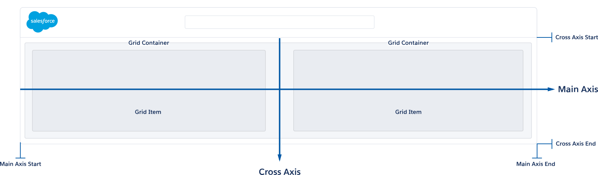

The Lightning Design System grid, based on Flexbox, provides a flexible, mobile-first, device-agnostic scaffolding system. It includes helper classes that you can use to alter the look and behavior of your grid, such as alignment, order, flow, and padding helpers.
Automatic SizingAutomatic Sizing › Column StretchAutomatic Sizing › Column Stretch w/ GuttersAutomatic Sizing › No Column StretchAutomatic Sizing › No Column Stretch w/ GuttersAutomatic Sizingdev ready
Preview
- Small
- Medium
- Large
Code
<div class="slds-grid">
<div class="slds-col">
<div class="slds-box slds-box--small slds-theme--shade slds-text-align--center">col</div>
</div>
<div class="slds-col">
<div class="slds-box slds-box--small slds-theme--shade slds-text-align--center">col</div>
</div>
</div>Note: The <div> with class slds-box is for demo purposes only.
By default, the grid items within a .slds-grid do not stretch to take up that available white-space on the main axis. Apply .slds-col to a grid item, it will stretch across the main axis. The width of each grid item will be determined by the content within that region.
To apply gutters between each grid item, the following spacing classes are available to add your intended gutters, .slds-p-horizontal--small, .slds-p-horizontal--medium, .slds-p-horizontal--large, .slds-p-around--small, .slds-p-around--medium and .slds-p-around--large.
You may need to pull the grid items back to their original grid boundaries of the grid container, apply the classes .slds-grid--pull-padded, .slds-grid--pull-padded-medium or .slds-grid--pull-padded-large to the .slds-grid.
Manual SizingManual Sizingdev ready
Preview
- Small
- Medium
- Large
Code
<div class="slds-grid slds-wrap slds-grid--pull-padded">
<div class="slds-p-horizontal--small slds-size--1-of-1">1</div>
<div class="slds-p-horizontal--small slds-size--1-of-2 slds-medium-size--5-of-6 slds-large-size--8-of-12">2</div>
<div class="slds-p-horizontal--small slds-size--1-of-2 slds-medium-size--1-of-6 slds-large-size--4-of-12">3</div>
<div class="slds-p-horizontal--small slds-size--1-of-1 slds-medium-size--1-of-2 slds-large-size--1-of-3">4</div>
<div class="slds-p-horizontal--small slds-size--1-of-1 slds-medium-size--1-of-2 slds-large-size--1-of-3">5</div>
<div class="slds-p-horizontal--small slds-size--1-of-1 slds-large-size--1-of-3">
<div class="slds-grid slds-wrap slds-grid--pull-padded">
<div class="slds-p-horizontal--small slds-size--1-of-2 slds-medium-size--1-of-1 slds-large-size--1-of-2">6</div>
<div class="slds-p-horizontal--small slds-size--1-of-2 slds-medium-size--1-of-1 slds-large-size--1-of-2">7</div>
</div>
</div>
</div>If you need to set explicit widths to your grid items, apply the sizing classes to your grid items. Check out sizing helpers here.
Horizontal Alignment CenterHorizontal Alignment Centerdev ready
Preview
- Small
- Medium
- Large
Code
<div class="slds-grid slds-grid--align-center">
<div>Content determines the width unless otherwise set</div>
<div>1</div>
<div>2</div>
<div>3</div>
</div>If you want your columns to grow from the the center of the main (horizontal) axis, apply the class slds-grid--align-center.
Horizontal Alignment SpaceHorizontal Alignment Spacedev ready
Preview
- Small
- Medium
- Large
Code
<div class="slds-grid slds-grid--align-space">
<div>Content determines the width unless otherwise set</div>
<div>1</div>
<div>2</div>
<div>3</div>
</div>To evenly distribute columns on the main axis with an equal amount of white space separating the columns, apply the class slds-grid--align-space.
Horizontal Alignment SpreadHorizontal Alignment Spreaddev ready
Preview
- Small
- Medium
- Large
Code
<div class="slds-grid slds-grid--align-spread">
<div>Content determines the width unless otherwise set</div>
<div>1</div>
<div>2</div>
<div>3</div>
</div>To spread out your columns on the main axis, with the first column starting at the start of your main axis and last item ending at the far end of your main axis, apply the class .slds-grid--align-spread.
Horizontal Alignment EndHorizontal Alignment Enddev ready
Preview
- Small
- Medium
- Large
Code
<div class="slds-grid slds-grid--align-end">
<div>Content determines the width unless otherwise set</div>
<div>1</div>
<div>2</div>
<div>3</div>
</div>If you want your columns to grow from the end of the main axis, apply the class .slds-grid--align-end.
Vertical Alignment StartVertical Alignment Startdev ready
Preview
- Small
- Medium
- Large
Code
<div class="slds-grid slds-grid--vertical-align-start">
<div>Content determines the width unless otherwise set</div>
<div>1</div>
<div>2</div>
<div>3</div>
</div>To align a single row or multi-line rows to the beginning of the cross axis, apply the class .slds-grid--vertical-align-start. Note, to vertically align elements on a cross-axis of a .slds-grid, the elements need available vertical white space. This is usually achieved by having a height applied to the .slds-grid.
Vertical Alignment CenterVertical Alignment Centerdev ready
Preview
- Small
- Medium
- Large
Code
<div class="slds-grid slds-grid--vertical-align-center">
<div>Content determines the width unless otherwise set</div>
<div>1</div>
<div>2</div>
<div>3</div>
</div>To vertically center align a single row or multi-line rows to the height of a grid container, apply the class .slds-grid--vertical-align-center. Note, to vertically align elements on a cross-axis of a .slds-grid, the elements need available vertical white space. This is usually achieved by having a height applied to the .slds-grid.
When .slds-grid--vertical-align-center is used in conjunction with .slds-grid--align-center, the outcome would horizontally and vertically center align your content in the center of the .slds-grid.
Vertical Alignment EndVertical Alignment Enddev ready
Preview
- Small
- Medium
- Large
Code
<div class="slds-grid slds-grid--vertical-align-end">
<div>Content determines the width unless otherwise set</div>
<div>1</div>
<div>2</div>
<div>3</div>
</div>To align a single row or multi-line rows to the end of the cross axis, apply the class .slds-grid--vertical-align-center. Note, to vertically align elements on a cross-axis of a .slds-grid, the elements need available vertical white space. This is usually achieved by having a height applied to the .slds-grid.
Vertical Alignment ItemVertical Alignment Itemdev ready
Preview
- Small
- Medium
- Large
Code
<div class="slds-grid">
<div class="slds-align-top">Top Align</div>
<div class="slds-align-middle">Middle Align</div>
<div class="slds-align-bottom">Bottom Align</div>
</div>To specify the vertical placement of grid items on the cross axis, you can apply .slds-align-top, .slds-align-middle, and .slds-align-bottom to a grid item. Note, to vertically align elements on a cross-axis of a .slds-grid, the elements need available vertical white space. This is usually achieved by having a height applied to the .slds-grid.
Vertical StretchVertical Stretchdev ready
Preview
- Small
- Medium
- Large
Code
<div class="slds-grid slds-grid--vertical-stretch">
<div>Content determines the width unless otherwise set</div>
<div>1</div>
<div>2</div>
<div>3</div>
</div>By default, grid items extend vertically unless .slds-wrap is applied to your parent grid container or you have multiple rows. If you have need multiple rows that stretch the height of the parent grid container, you can apply the class .slds-grid--vertical-stretch. Note, to vertically align elements on a cross-axis of a .slds-grid, the elements need available vertical white space. This is usually achieved by having a height applied to the .slds-grid.
Alignment Item CenterAlignment Item Centerdev ready
Preview
- Small
- Medium
- Large
Code
<div class="slds-grid slds-grid--vertical-align-center slds-grid--align-center">
<div>Content determines the width unless otherwise set</div>
</div>When .slds-grid--vertical-align-center is used in conjunction with .slds-grid--align-center, the outcome would horizontally and vertically center align your content in the center of the .slds-grid.
Alignment Item BumpAlignment Item Bumpdev ready
Preview
- Small
- Medium
- Large
Code
<div class="slds-grid">
<div>1</div>
<div>2</div>
<div>3</div>
<div>4</div>
<div class="slds-col--bump-left">5</div>
<div>6</div>
</div>To "bump" a single grid item or a grid item plus the precedding grid items that follow, apply the class .slds-col--bump-{direction}, with {direction} being either left, right, top or bottom to a grid item.
OrderOrderdev ready
Preview
- Small
- Medium
- Large
Code
<div class="slds-grid">
<div class="slds-small-order--2 slds-medium-order--1 slds-large-order--3">1</div>
<div class="slds-small-order--3 slds-medium-order--2 slds-large-order--2">2</div>
<div class="slds-small-order--1 slds-medium-order--3 slds-large-order--1">3</div>
</div>These helper classes visually reorder grid elements independently from their position in the markup.
Container FrameContainer Framedev ready
Preview
- Small
- Medium
- Large
Code
<div class="slds-grid slds-grid--frame">
<div>App Content</div>
</div>If you want your application to fill 100% of the width and height of the viewport and nest other grids inside, use the top-level app helper class .slds-grid--frame.
ContainersContainersdev ready
Preview
- Small
- Medium
- Large
Code
<div class="slds-container--small">Contents go here.</div>
<div class="slds-container--medium">Contents go here.</div>
<div class="slds-container--large">Contents go here.</div>
<div class="slds-container--x-large">Contents go here.</div>
<div class="slds-container--fluid">Contents go here.</div>
<div class="slds-container--left slds-container--small">Contents go here.</div>
<div class="slds-container--center slds-container--small">Contents go here.</div>
<div class="slds-container--right slds-container--small">Contents go here.</div>You can use the grid system’s containers to constrain your content to a certain width. You can center or left or right align the containers within your viewport.
Component Overview
Grid Wrapper
To use the grid system, add the class .grid to an element, component, or page layout. Each grid is independent of other nested grids. You can limit attributes of each grid to specific regions in the app. A grid style is not an all or nothing solution.
Adding the class .wrap causes the flow of your .col elements to wrap when they exceed 100% of their parent’s width.
You can easily change the flow direction of your grid by adding a modifier class to the .grid element. To stack your columns vertically instead of their default row behavior, use .grid--vertical. You can also reverse the left to right behavior by adding .grid--reverse or top to bottom by adding .grid--vertical-reverse.
If you want your application to fill 100% of the width and height of the viewport and nest other grids inside, use the top-level app helper class .grid--frame. An assortment of .container classes are available to contain your grids.
Grid Items (Regions/Colums)
When you add the class .col to the grid items, no padding or gutters are added. They are simply divisions of their parent. If you want gutters, add one of the spacing utility classes such as .p-horizontal--small, .p-horizontal--medium, .p-horizontal--large, .p-around--small, .p-around--medium or .p-around--large. These will add different sized gutters to the left and right side of your column.
By default, the width of each column within a grid row is determined by the content within. Though this automatic sizing allows you to achieve most desired outcomes, you can add manual sizing classes to the columns if you need specific column widths.
Using the manual sizing class helpers, you can specify a column span across the following grids –2, 3, 4, 5, 6, 7, 8 and 12. The grid supports up to 12 columns.
Visual Glossary of Terminology
Usage
| Class Name | Usage | |
|---|---|---|
.slds-grid | Applied to: any container Outcome:Initializes grid | Required: Required Comments:-- |
.slds-grid--frame | Applied to:
100% of the width and height of the viewport | Required: No, optional element or modifier Comments:-- |
.slds-grid--vertical | Applied to:
Stack your columns vertically instead of the default row behavior | Required: No, optional element or modifier Comments:-- |
.slds-grid--reverse | Applied to:
Reverses the main axis starting point in which your grid flows | Required: No, optional element or modifier Comments:-- |
.slds-grid--vertical-reverse | Applied to:
Reverses the cross axis starting point in which your grid flows | Required: No, optional element or modifier Comments:-- |
.slds-grid--align-center | Applied to:
Columns align in the center to the main axis and expand in each direction | Required: No, optional element or modifier Comments:-- |
.slds-grid--align-spread | Applied to:
Columns align to the left and right followed by center. Space is equal between them | Required: No, optional element or modifier Comments:With only two columns — you can get a similar effect by setting one of the columns to |
.slds-grid--align-space | Applied to:
Columns are evenly distributed with equal space around them all | Required: No, optional element or modifier Comments:-- |
.slds-grid--align-end | Applied to:
Columns start on the opposite end of the grid's main axis | Required: No, optional element or modifier Comments:-- |
.slds-grid--vertical-align-center | Applied to:
Columns align in the center to the cross axis and expand it each direction | Required: No, optional element or modifier Comments:-- |
.slds-grid--vertical-align-end | Applied to:
Columns start on the opposite end of the grid's cross axis | Required: No, optional element or modifier Comments:-- |
.slds-grid--vertical-stretch | Applied to:
Stretch the grid items for both single row and multi-line rows to fill the height of the parent grid container | Required: No, optional element or modifier Comments:Grid items will stretch the height of the parent grid container by default, unless |
.slds-grid--pull-padded | Applied to:
Normalizes the 0.75rem of padding when nesting a grid in a | Required: No, optional element or modifier Comments:-- |
.slds-grid--pull-padded-medium | Applied to:
Normalizes the 1rem of padding when nesting a grid in a | Required: No, optional element or modifier Comments:-- |
.slds-grid--pull-padded-large | Applied to:
Normalizes the 1.5rem of padding when nesting a grid in a | Required: No, optional element or modifier Comments:-- |
.slds-col | Applied to: Grid items of Initializes a grid column | Required: No, optional element or modifier Comments:This class is not required since all child nodes of a flex grid become columns. It can help with clarity. |
.slds-col--paddedDeprecated | Applied to: Grid items of Initializes a grid column with 0.75rem of horizontal padding | Required: No, optional element or modifier Comments:Use spacing utility |
.slds-col--padded-mediumDeprecated | Applied to: Grid items of Initializes a grid column with 1rem of horizontal padding | Required: No, optional element or modifier Comments:Use spacing utility |
.slds-col--padded-largeDeprecated | Applied to: Grid items of Initializes a grid column with 1.5rem of horizontal padding | Required: No, optional element or modifier Comments:Use spacing utility |
.slds-col--padded-aroundDeprecated | Applied to: Grid items of Initializes a grid column with .75rem of padding around | Required: No, optional element or modifier Comments:Use spacing utility |
.slds-col--padded-around-mediumDeprecated | Applied to: Grid items of Initializes a grid column with 1rem of padding around | Required: No, optional element or modifier Comments:Use spacing utility |
.slds-col--padded-around-largeDeprecated | Applied to: Grid items of Initializes a grid column with 1.5rem of padding around | Required: No, optional element or modifier Comments:Use spacing utility |
.slds-col--bump-left | Applied to: Grid item(s) of Bumps grid item(s) away from the other grid items to sit to the left, taking up the remaining white-space of the grid container | Required: No, optional element or modifier Comments:-- |
.slds-col--bump-right | Applied to: Grid item(s) of Bumps grid item(s) away from the other grid items to sit to the right, taking up the remaining white-space of the grid container | Required: No, optional element or modifier Comments:-- |
.slds-col--bump-top | Applied to: Grid item(s) of Bumps grid item(s) away from the other grid items to sit to the top, taking up the remaining white-space of the grid container | Required: No, optional element or modifier Comments:-- |
.slds-col--bump-bottom | Applied to: Grid item(s) of Bumps grid item(s) away from the other grid items to sit to the bottom, taking up the remaining white-space of the grid container | Required: No, optional element or modifier Comments:-- |
.slds-wrap | Applied to:
Allows columns to wrap when they exceed 100% of their parent’s width | Required: No, optional element or modifier Comments:-- |
.slds-nowrap | Applied to:
Keeps columns on one line. Allows columns to stretch and fill 100% of the parent’s width and height. | Required: No, optional element or modifier Comments:-- |
.slds-small-nowrap | Applied to:
Allows columns to stretch and fill 100% of the parent’s width and height when viewport width is wider than 480px. | Required: No, optional element or modifier Comments:-- |
.slds-medium-nowrap | Applied to:
Allows columns to stretch and fill 100% of the parent’s width and height when viewport width is wider than 768px. | Required: No, optional element or modifier Comments:-- |
.slds-large-nowrap | Applied to:
Allows columns to stretch and fill 100% of the parent’s width and height when viewport width is wider than 1024px. | Required: No, optional element or modifier Comments:-- |
.slds-col--rule-right | Applied to:
Adds border to right side of column | Required: No, optional element or modifier Comments:-- |
.slds-col--rule-left | Applied to:
Adds border to left side of column | Required: No, optional element or modifier Comments:-- |
.slds-col--rule-top | Applied to:
Adds border to top of column | Required: No, optional element or modifier Comments:-- |
.slds-col--rule-bottom | Applied to:
Adds border to bottom of column | Required: No, optional element or modifier Comments:-- |
.slds-has-flexi-truncate | Applied to:
Needed when truncation is nested in a flexible container in a grid | Required: No, optional element or modifier Comments:This class is placed on a parent column that contains a flexbox element containing |
.slds-no-flex | Applied to:
Removes flexbox from grid column | Required: No, optional element or modifier Comments:Using this class makes the column the same width as the children within and allows the other column to take up all the extra space. The outcome is very much like using |
.slds-no-space | Applied to:
Sets the column to a min-width of 0 | Required: No, optional element or modifier Comments:Occasionally needed on a flexible element containing |
.slds-grow | Applied to:
Allows column to grow to children’s content | Required: No, optional element or modifier Comments:-- |
.slds-grow-none | Applied to:
Prevents column from growing to children’s content | Required: No, optional element or modifier Comments:-- |
.slds-shrink | Applied to:
Allows column to shrink to children's content | Required: No, optional element or modifier Comments:-- |
.slds-shrink-none | Applied to:
Prevents column from shrinking to children's content | Required: No, optional element or modifier Comments:-- |
.slds-align-top | Applied to:
Vertically aligns element to top of | Required: No, optional element or modifier Comments:-- |
.slds-align-middle | Applied to:
Vertically aligns element to middle of | Required: No, optional element or modifier Comments:-- |
.slds-align-bottom | Applied to:
Vertically aligns element to bottom of | Required: No, optional element or modifier Comments:-- |
.slds-container--small | Applied to:Outcome: Restrict width of containers to a maximum of 480px | Required: No, optional element or modifier Comments:-- |
.slds-container--medium | Applied to:Outcome: Restrict width of containers to a maximum of 768px | Required: No, optional element or modifier Comments:-- |
.slds-container--large | Applied to:Outcome: Restrict width of containers to a maximum of 1024px | Required: No, optional element or modifier Comments:-- |
.slds-container--x-large | Applied to:Outcome: Restrict width of containers to a maximum of 1280px | Required: No, optional element or modifier Comments:-- |
.slds-container--center | Applied to:Outcome: Horizontally positions containers in the center of the viewport | Required: No, optional element or modifier Comments:-- |
.slds-container--left | Applied to:Outcome: Horizontally positions containers to the left of the viewport | Required: No, optional element or modifier Comments:-- |
.slds-container--right | Applied to:Outcome: Horizontally positions containers to the right of the viewport | Required: No, optional element or modifier Comments:-- |
.slds-col-rule--rightDeprecated | Applied to:
Adds border to right side of column | Required: No, optional element or modifier Comments:Use |
.slds-col-rule--leftDeprecated | Applied to:
Adds border to left side of column | Required: No, optional element or modifier Comments:Use |
.slds-col-rule--topDeprecated | Applied to:
Adds border to top of column | Required: No, optional element or modifier Comments:Use |
.slds-col-rule--bottomDeprecated | Applied to:
Adds border to bottom of column | Required: No, optional element or modifier Comments:Use |
.slds-nowrap--smallDeprecated | Applied to:
Allows columns to stretch and fill 100% of the parent’s width when viewport width is wider than 480px. | Required: No, optional element or modifier Comments:Use |
.slds-nowrap--mediumDeprecated | Applied to:
Allows columns to stretch and fill 100% of the parent’s width when viewport width is wider than 768px. | Required: No, optional element or modifier Comments:Use |
.slds-nowrap--largeDeprecated | Applied to:
Allows columns to stretch and fill 100% of the parent’s width when viewport width is wider than 1024px. | Required: No, optional element or modifier Comments:Use |